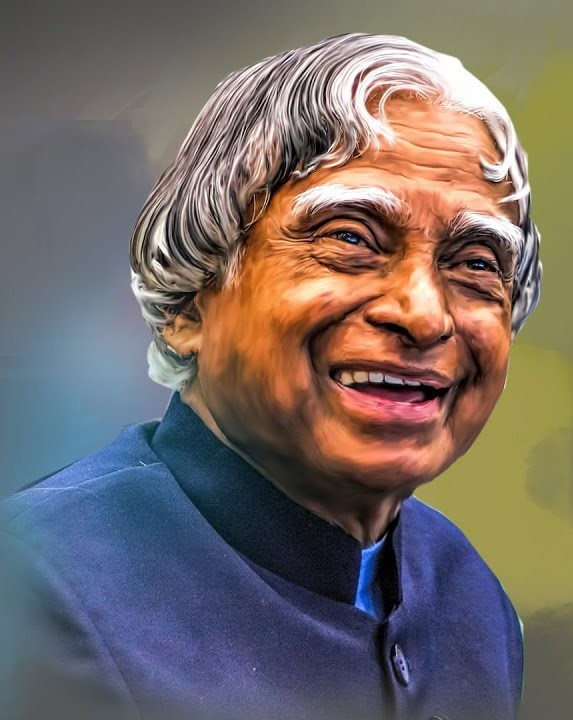

The Missle Man Of India
Dr. APJ Abdul Kalam is known as the missile man of India because of his contribution to the project of Missiles. The name of the two main projects of the missile which is launched by India, which are named “Agni” and “Prithvi”. Dr. APJ Abdul Kalam was one of the leading scientists of the ISRO, that is to say, the Indian Space Research Organisation, and also of DRDO, which stands for Defence Research and Development Organisation. In the “Pokhran II” nuclear test, which was tested in the year 1998, and is known as the second original nuclear test by India, he played a crucial role in it as well.
Biographies
- Kalam was a vegeterian. In his words “I was forced to become a vegetarian due to financial constraints, but I eventually came to enjoy it.” Today, I am a complete vegetarian”
- Kalam’s autobiography ‘Wings of Fire was initially published in English Language but then later published in 13 other languages.
- He was born in a Tamil Muslim Family
- He was India’s ‘first bachelor President
- He received Bharat Ratna for his prestigious work